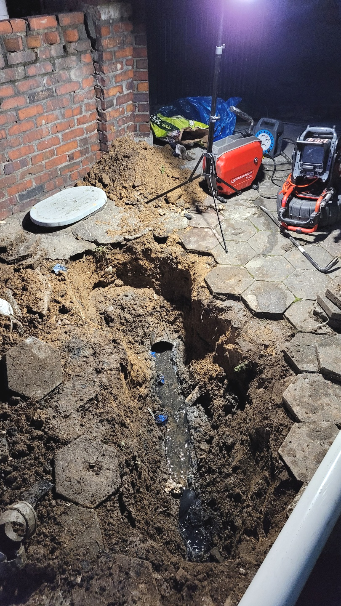
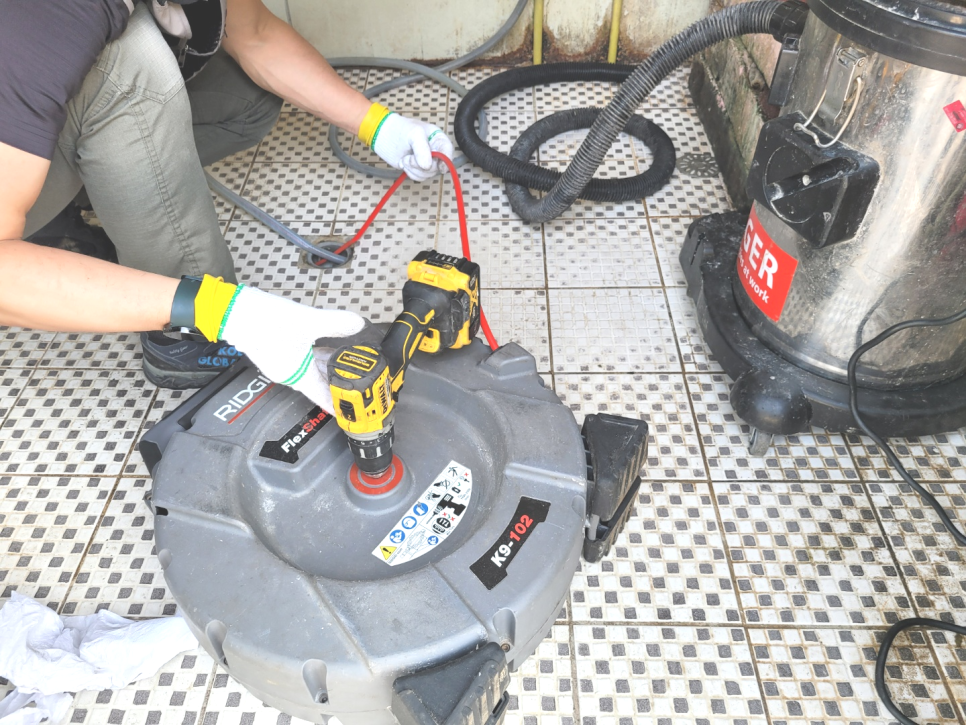
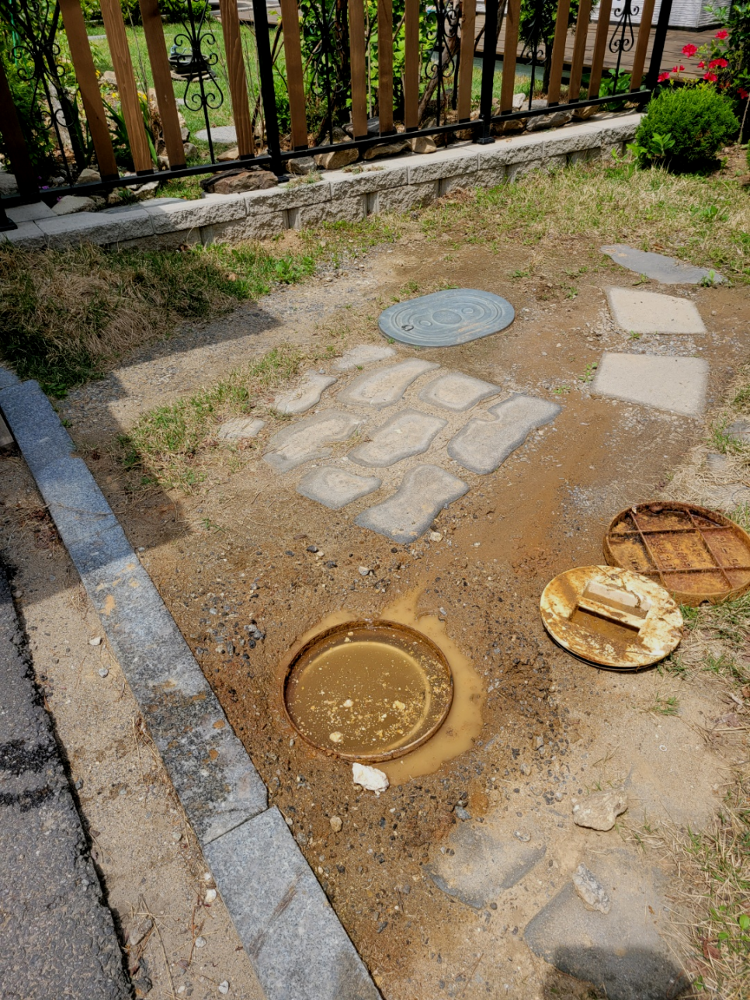
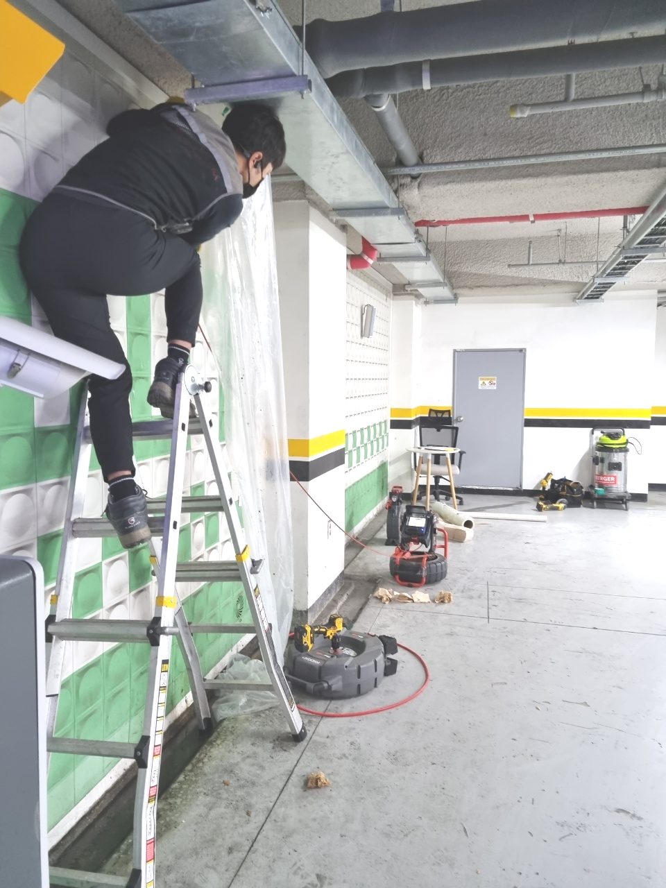
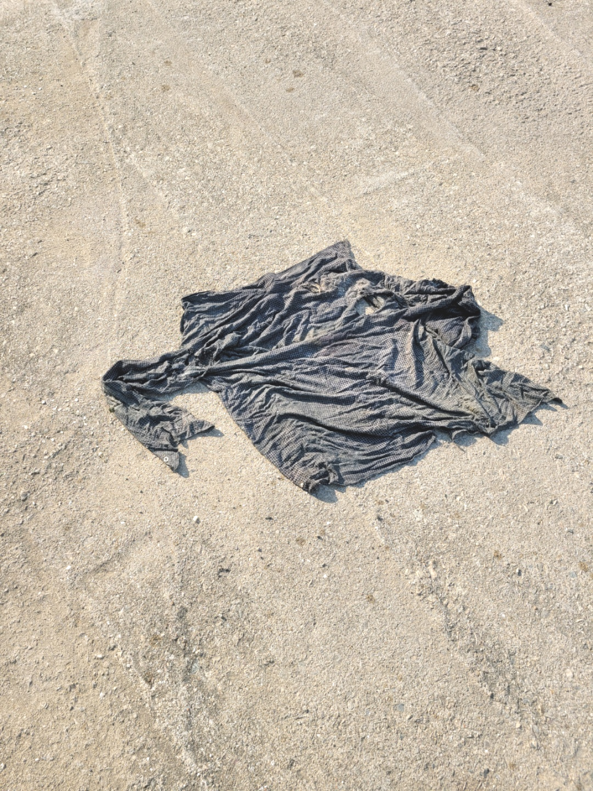
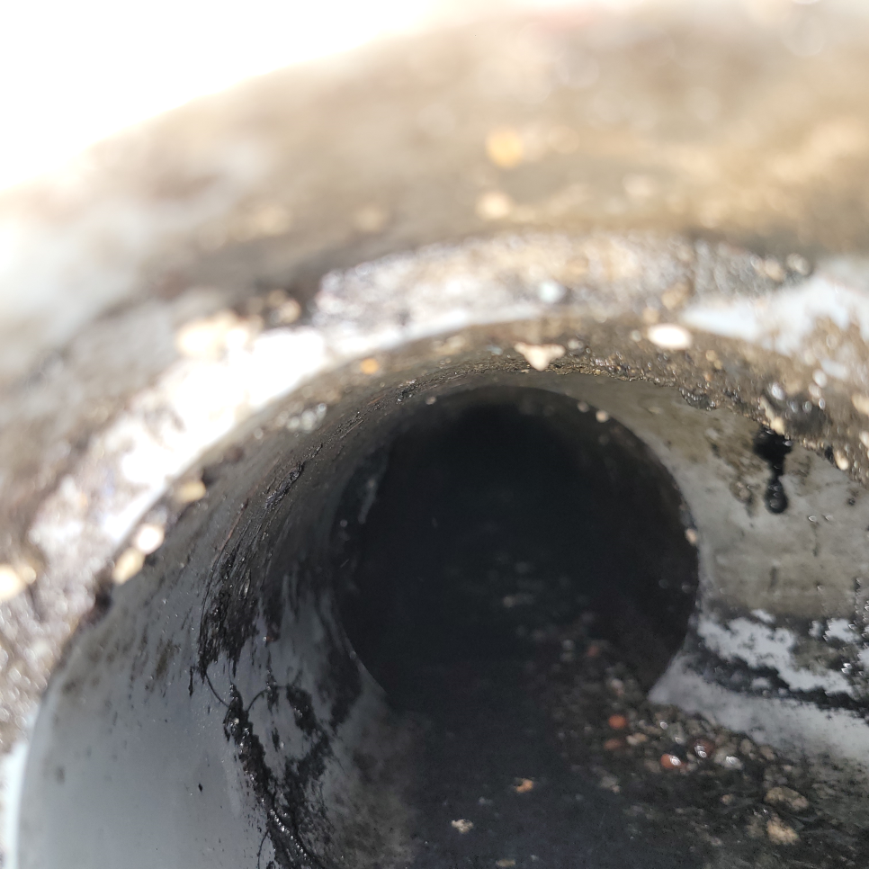

🏠 평택 서탄 하수도막힘 진위 하수구역류 배관뚫음 고압세척 청소 설비
평택 싱크대막힘 전문 시공 후기

📋 작업 개요
- 위치: 평택
- 서비스 유형: 싱크대막힘, 변기막힘, 하수구막힘, 배관막힘, 누수수리, 역류해결, 뚫는업체, 배관청소, 고압세척, 설비공사
- 작업 일시: 2023. 11. 24. 1:08
- 업체명: 하수구수사대 (010-5615-2118)
🔍 문제 상황
안녕하십니까^^
설비전문업체 "하수구수사대"를 찾아주셔서 감사드립니다.
보통 대부분 우리는 배수관가 막히게 되면 곧바로 전문업체에 의뢰하기 보다는 급한 마음에 직접 해결을 하려고 시도하시는 분들이 많이 계시는것 같습니다.
조급한 나머지 무조건 행동을 취하고 다양한 업체를 찾아보고 이러다 보면 시간이 더 지연되어 상태가 좋아지기보다 악화되는 경우도 생깁니다.배수구 이럴때는 고민만하지 마시고 전문가에게 곧바로 문의하시길 추천드려요.
평택 서탄 하수도막힘 진위 하수구역류 배관뚫음 고압세척 청소 설비
🔎 원인 분석
💡 전문가 진단: 평택 서탄 하수도막힘 진위 하수구역류 배관뚫음 고압세척 청소 설비
단순 막힘 말고도 역류 같은 문제처럼 퇴수에는 생길 수있는 증상들은 매우 많습니다. 그럴 때 전문 업체를 통해 뚫기도 하지만 저렴한 곳만 알아보시는 것은 오히려 나중에 더 큰 피해를 커울수 있다는 것을 말씀 드리고 싶습니다.
여기에도 확실한 퇴수구청소 작업이 필요해 보였습니다. 이에 추가적으로 저희는 잔여 물질들을 제거를 하기 위해서 플렉스 샤프트 작업을 진행하기로 결정을 하였습니다. 플렉스 샤프트 장비는 회전력을 발생시키는 갈퀴 노즐이 있어서 석회처럼 단단한 이물질들을 갈아내는 역할을 하는 장비입니다.
뚫음 현장뿐만 아니라 부속품 교체를 하거나 누수현장도 실생활에 필요한 모든 부분들을 도와드리고 있어요. 혼자서 어려울 경우 저희 배관뚤어드림을 통해 도움을 받아보세요. 어려운 현장이라고 하여도 항상 완벽하게 작업해 드려요.
전문장비를 갖춘 곳이라면 문제 상태에 따라 적절한 작업이 진행될 것고 현장 기술자의 경우 배관막힘 장비를 단번에 정해야 해요. 혹여나 준비되지 않은 업체는 작업의 신속성이 감소하고 작업능률 또한 상승하지 않다 보니 견적가도 높아지게 됩니다.
퇴수배관 안은 초입부터 깊은 구간까지 기름 슬러지와 함께 이물질이 고착이 되어서 굳은 상태였는데요. 이렇게 단단하게 굳은 덩어리들은 단순히 스프링기나 석션기로는 제거가 안될 수 있는데요. 이러한 이물질을 확실히 제거하기 위해서는 퇴수배관 스케일링 작업을 하는 것이 필요합니다.

🔧 작업 과정
오랜 시간 배출구배관을 따라 흘러내려간 이물질들이 쌓이고 쌓여 단단하게 고착화되었을 확률이 높았습니다. 일단 고여있던 물을 어느 정도 없앤 뒤, 내시경 카메라를 배출구 배관 쪽으로 넣어 작업에 돌입하였습니다.
스케일링은 막혀버린것도 해결해주지만 심한냄새도 없애주는데요.괜스레배수관을 수리한다고 만지시면 큰공사까지 할수있어서 배수관에대해 지식이많은 배출관배관업체에 연락하는게좋아요
저희 퇴수구 전문가 분들께선 작업에 착수하고 같은문제가 반복될가능성이 있는것을 완벽제거하는것을 최종적인 목표로하고있어요. 혹여라도 퇴수구 문제재발시 무료로작업하는서비스를 실시하고있어요
실제있었던 사례로는 뾰족한것으로 무리를하시거나 약품등을 넣으셨다가 노화된 배출관 금이가거나 최악일때는 무너져내리기도 하기때문에 큰일이 돼버리기도해요.
전문가로서 하수구와관련된 대부분을하기에 각종하수도 물샘증상을 발견하셨다면 문의를넣어주시면 천천히듣고 빨리가드리고 문제를없애드리겠습니다
간단하게만 믿으셨다가 문제가더배로 커지게됩니다.지금이라도 안되는걸 생각하시고 있다면은 퇴수구 뚫으실려한생각을 그만두는게좋습니다!
배관 내시경 카메라로 보이지 않는 배관 상태를 파악하여 그게 맞는 장비를 투입하는데요 하수도막힘 증상이 반복하지 않으려면 하수도청소 전문가를 통해서 배관 상태를 점검받고 확실한 제거 작업을 통해 하수도막힘 증상을 해결할 수 있습니다.
간혹 `전문성`을 앞세운 업체임에도 내시경 장비가 없어 원인 규명을 하지 못하는 사례도 있습니다. 내부 상황을 정확히 인지하지 못한 채 스프링 장비로 통수만 하고 철수하는 바람에 얼마 안 가 다시 배출관배관이 막힌 케이스도 있었습니다.


✅ 작업 완료
그래서 퇴수구가 막혔다고 모두가 같은 상황이 아니지요. 막힌 상황에 알맞게 수리가 들어가야 하고 그러기 위해서는 퇴수구설비업체의 도움이 필요합니다.
저희는 가정집뿐만 아니라 상가,빌딩,아파트, 다세대 주택등 퇴수막힘 현장이라면 장소를 가리지 않고 퇴수막힘 문제를 해결해 드리고 있으니 언제든지 부담없이 연락주세요!
#하수구막힘 #하수구뚫음 #하수구역류 #씽크대막힘 #싱크대역류 #오수관막힘 #하수구청소 #욕실하수구막힘 #변기막힘 #하수구뚫는비용 #싱크대수리 #화장실막힘




⚠️ 베란다 누수 및 방수 관리 방법
- ✅ 비가 많이 올 때 창틀 주변이나 아래층 천장에 얼룩이 생기는지 정기적으로 확인해 보세요.
- ✅ 우수관 주변 실리콘 마감이 들뜨거나 깨진 틈새가 있는지 손상 여부를 수시로 체크하세요.
- ✅ 베란다 바닥 타일의 줄눈(메지)이 소실되면 그 틈으로 물이 침투하여 누수가 유발됩니다.
- ✅ 누수 의심 증상 발견 시 방치하면 아래층 손실이 커지므로 즉시 전문가의 진단을 받으십시오.
💡 핵심 정리
- 확실한 장비 작업(내시경 점검 및 샤프트 스케일링)으로 원인을 뿌리 뽑습니다.
- 작업 후 1년 이내에 동일한 부위 재발 시 100% 무상 A/S 서비스를 보장합니다.
- 서울 · 경기 · 인천 전 지역에 24시간 언제든 긴급 출동할 수 있도록 항시 대기 중입니다.
❓ 자주 묻는 질문 (FAQ)
🚨 평택 싱크대막힘 문제로 고민이신가요?
정확한 원인 진단과 확실한 시공으로 재발 없는 해결을 약속드립니다.
24시간 긴급 출동 | 서울 · 경기 · 인천 전지역 | 1년 내 재발 시 무상 A/S